Fx
smearor-commons-fx is a headless, serializable per-pixel effect
library - the Rust analogue of Burn-My-Windows’ shader effects,
generalized to any rectangular content a consumer can snapshot into
a PixelBuffer<Rgba> (widgets, cards, sprites).
Effects animate textures, not widgets: the consumer snapshots its
content once, hands it over as ctx.window, and plays the animation
as a frozen texture while the real widget stays hidden. Layout,
geometry and z-order remain the consumer’s responsibility.
The crate is clock-free: FxContext.progress arrives pre-eased from
a TimedAnimation driven by the consumer.
- Context - the uniform block (
FxContext,Direction,Layer,Layers) - Params - the
ParamSpec/ParamKind/ParamValuemetadata model - Spec -
EffectSpec, the serde-tagged dispatch root
Shipped effects
| Nick | Effect | Mechanism |
|---|---|---|
crossfade | Crossfade | Reference effect - plain alpha blend (Phase 1). |
glide | Glide | UV transform (scale, squish, tilt, shift) + dissolve. |
pixel-wheel | PixelWheel | Pixelation + angular spoke wipe. |
fire | Fire | Fractal-noise burn front with a 5-stop flame ramp. |
matrix | Matrix | Glyph rain + trail composite over a falling window mask; glyphs come from a GlyphSource (bundled ProceduralGlyphAtlas with an embedded 5x7 bitmap font). |
aura-glow | AuraGlow | Radial blur + cos-palette glow + superellipse crop. |
doom | Doom | Pixelated column melt (DOOM screen melt). |
apparition | Apparition | Shake + suction + whirl dematerialization. |
portal | Portal | Five-layer swirl portal + window travel. |
tv | Tv | CRT collapse to the center line. |
tv-glitch | TvGlitch | CRT collapse overlaid with glitch rows. |
glitch | Glitch | Row shear + interference + grain + RGB split. |
venetian-blinds | VenetianBlinds | Turning or folding horizontal slats. |
shredder | Shredder | Falling paper strips with torn edges. |
materialize | Materialize | Quantized panel growth + tint reveal. |
energize-a | EnergizeA | Radial atom burst dissolve. |
energize-b | EnergizeB | Top-down shower + streak + atom dissolve. |
rgbwarp | RgbWarp | Vertical channel-split peel + brightness pulse. |
mushroom | Mushroom | 8-bit scale + rising sparks + rays + star rings. |
pixelate | Pixelate | Cell-dropout pixel dissolve. |
pixel-wipe | PixelWipe | Radial pixel wipe from the pointer (window center when absent). |
hexagon | Hexagon | Shrinking hexagonal tiles + glow lines, additive or over-blended. |
incinerate | Incinerate | Fiery-edge burn from the pointer or a random edge, with smoke and embers. |
wisps | Wisps | Orbiting light dots + shrinking noise dissolve. |
team-rocket | TeamRocket | Window warp toward a sparkle position + rotating superellipse star flare. |
trex | Trex | Claw-scratch strips (FxAssets::claws or a procedural fallback) + flash color, finite-difference warp. |
snap | Snap | Voronoi-grouped dust disintegration with wind (FxAssets::dust or fallback). |
paint-brush | PaintBrush | Left-to-right brush-stroke sweep revealing/erasing the window (FxAssets::brush or fallback). |
broken-glass | BrokenGlass | Shattered shard layers blowing away with gravity (FxAssets::shards or fallback). |
aperture-panels | AperturePanels | Two-pass panel grid flipping the window in/out over a backdrop (transparent, black, star field, nebula; cake easter egg). |
morph | Morph | Two-pass curl-noise flow, edge-guided melt, or shared-grid pixelate morph. |
wormhole | Wormhole | Two-pass rubber-sheet funnel with the window pushed out of a void, with bounce. |
focus | Focus | Radial blur cone (blur_amount px radius, blur_quality taps/ray) resolving while the window fades in. |
All 33 are reachable through EffectSpec::by_nick/build and
survive JSON round trips. Each rustdoc states the behavioral spec and
names its source shader in the Burn-My-Windows checkout for
provenance; the implementations are semantic re-implementations on our
ops (mix, smoothstep, absolute_edge_mask, relative_edge_mask,
offset_hue, whirl, darken, lighten, alpha_over, tritone,
BufferView sampling), not line ports.
Effect assets
FxContext::assets (FxAssets) is the channel through which consumers
hand optional texture atlases to the five asset-driven effects
(trex, snap, paint-brush, broken-glass, and any future
atlas effect). Each slot (claws, dust, brush, shards) is an
Optional BufferView sampler; when empty the effect falls back to a
deterministic procedural map, so headless consumers render correctly
without packaged image files while GTK consumers can pass the real
Burn-My-Windows PNGs.
Two-pass effects
Three effects (aperture-panels, morph, wormhole) declare
Layers::SurfaceAndWindow - Burn-My-Windows’ uLayer architecture.
The consumer runs apply twice per frame: once with
ctx.layer = Layer::Surface (the backdrop pass reading
ctx.surface), once with Layer::Window, and composites window
over surface. WindowEffect::check returns
FxError::MissingSurface when a two-pass effect runs without
ctx.surface; apply itself degrades gracefully to transparent
reads so headless consumers can still drive the window pass alone.
The GTK adapter (gtk4 feature)
smearor_commons_fx::gtk attaches the headless engine to real GTK
widgets - the same frame pipeline the experimenter uses:
gtk::snapshot(&widget)- renders a widget into a frozen straight-alphaPixelBuffer<Rgba>atallocation * scale_factor(WidgetPaintable-> render node -> cairoARgb32-> buffer). Called once per animation; live widget content is a non-goal.gtk::snapshot_to_png(&widget, path)-snapshotplus the PNG write in one call - the probe “render once, dump, quit” idiom. Past the snapshot step failures surface asFxError::PngDump(buffer-to-surface conversion or the file write).gtk::FxPlayer- aDrawingAreasubclass owning the clock and frame buffers.set_effect(spec, input)+play(FxPlayOptions)runs aTimedAnimationon the widget’s frame clock and paints the effect output as aTextureNode;pause/resume/stopand theanimation-endedsignal cover the lifecycle. Pointer events feedctx.pointer(broken-glass epicenter, pixel-wipe origin).gtk::SurfaceProvider- the callback layered (SurfaceAndWindow) specs pull theirctx.surfacebackdrop from, once per frame. Without one the pass degrades gracefully (MissingSurfacecontract).
Floating-board recipe (the adapter never owns the real widget - hide/show stays consumer policy):
- card added:
snapshot(card)->FxPlayerat the card’s coordinates, hide the card,playanOpenspec, onanimation-endedremove the player and show the card. - card removed: same in
Closedirection; destroy the card on end. - board transitions: snapshot card + board, run a layered spec
with a
SurfaceProviderreturning the board pixels.
The fx experimenter
cargo run -p smearor-commons-fx --features gtk4 --example fx opens
the GTK experimenter - the same grammar as the animation examples:
a rendered test card on the left, generated controls on the right,
playback and effect serialization at the bottom.
The right panel is metadata-driven: every ParamKind maps to one
widget (Float -> Scale, Int -> SpinButton, Toggle ->
CheckButton, Color -> ColorDialogButton, Choice ->
DropDown), so no per-effect UI is written by hand.
The test card is a fixed PixelBuffer<Rgba> rendered through
smearor-commons-drawing - a floating-board card on
transparency: every pixel outside the card rect keeps a = 0 and
only the card’s own soft shadow carries alpha. The desktop gradient
is compositor-owned (common::desktop); per frame the canvas shows
out source-over desktop, exactly the split a real compositor
makes when it hands a window snapshot to an effect.
Save/Load/Emit speak the shared Effect envelope:
{
"demo": "fx",
"object": "fire",
"options": { "scale": 1.0, "direction": "close", "seed": 42 },
"duration_secs": 1.6,
"components": []
}
options is the serde-flattened EffectSpec payload plus
direction/seed, so a saved effect replays deterministically.
Emit generates a serde_json spec constructor plus a ready
FxContext/apply skeleton (<name>.rs next to the JSON path).
The test card itself - a floating-board window mock with the
Smearor tile mark - regenerates via cargo run -p smearor-commons-fx --features gtk4 --example dump_card:
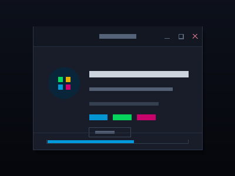
Rendered frames (all deterministic for a fixed seed/progress) come
from cargo run -p smearor-commons-fx --features gtk4 --example dump_frame -- <effect> <progress> <direction>:
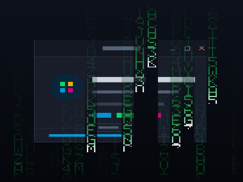
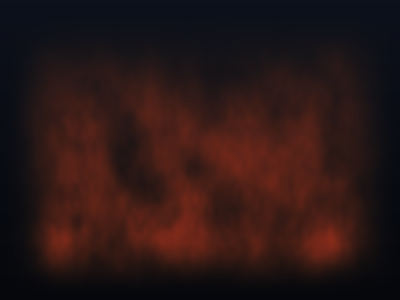
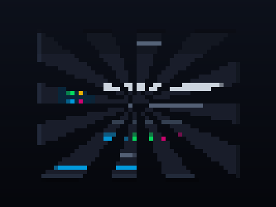
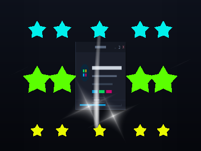
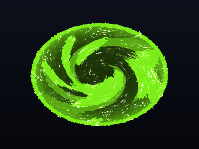
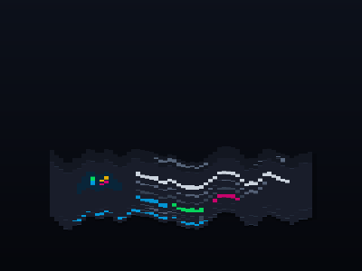
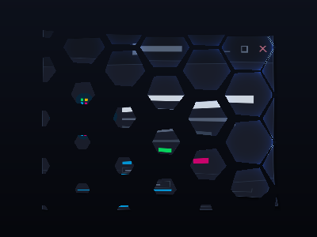
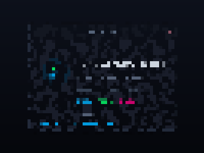
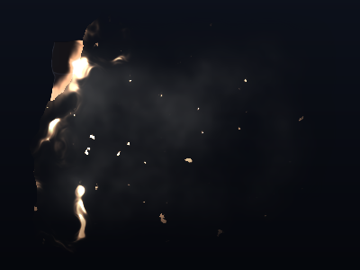
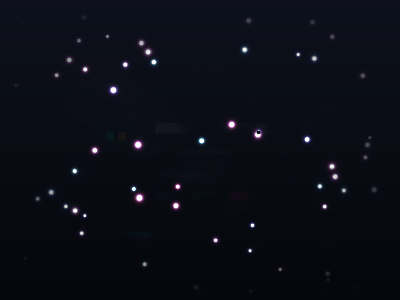
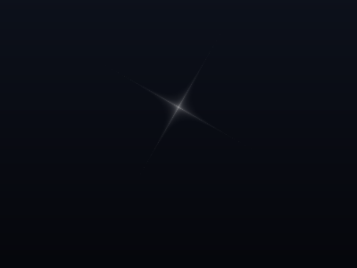
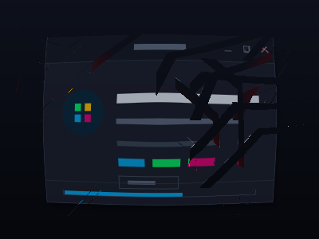
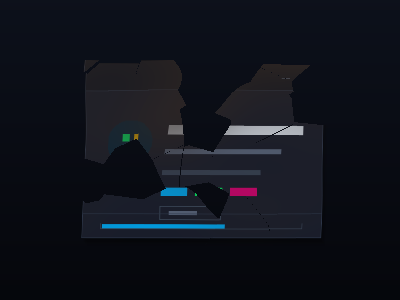
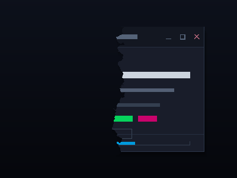
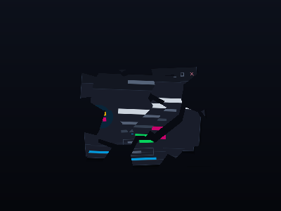
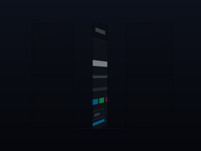
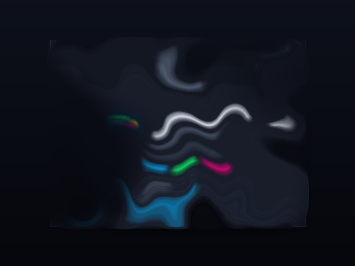
Parallel rows and schema export (phase 6)
fill fans out over disjoint row bands (render.rs), so every
apply is multicore - sequential is the byte-identical reference
(parallel_output_is_byte_identical, rayon_output_is_byte_identical).
Two backends behind one abstraction: std::thread::scope (default,
zero dependencies) or rayon’s work-stealing pool behind
--features rayon. Measured (fx_bench, release, 400x300): the
parallelization itself buys focus 106 -> 27 ms (3.9x), fire 18 ->
4.9 ms (3.7x), crossfade 2.5 -> 0.9 ms (2.8x) on 4 cores; rayon adds
only variance reduction and pool reuse at high core counts - worth it
as an optional backend for uneven row costs (wormhole’s bisection),
not a dependency for the headless default. FX_THREADS overrides the
worker count, FX_BACKEND=scoped forces the std path inside a
rayon-enabled build:
FX_THREADS=1 cargo run --release -p smearor-commons-fx --example fx_bench
cargo run --release -p smearor-commons-fx --features rayon --example fx_bench
--features schemars adds JsonSchema to the whole effect model
(EffectSpec, the 33 effect structs, ParamSpec, ParamKind,
ParamValue, Direction, Layers, Layer; the geometry/color
newtypes carry their own derives). The exporter writes a validating
JSON Schema - effect is a const per variant, params land in
$defs:
cargo run -p smearor-commons-fx --features schemars \
--example fx_schema > effect.schema.json
schema_covers_all pins that every shipped nick appears in the
document.